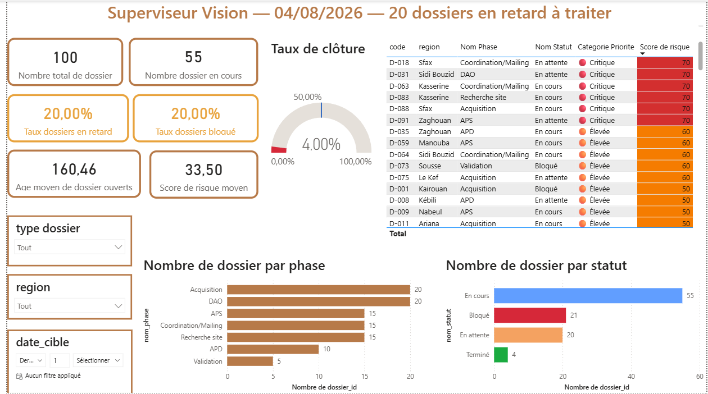

Analyse et modèle
Analyse du cahier des charges et conception du modèle de données.
Étude de cas · Business Intelligence
Un prototype de supervision décisionnelle pour suivre délais, blocages, priorités et charge de travail des dossiers techniques télécoms.
À partir d'un cahier des charges, j'ai modélisé une base SQL Server, préparé un jeu de données de démonstration, puis construit un tableau de bord Power BI de six pages, ses mesures DAX et sa documentation.
Prototype réalisé individuellement à partir d'un cahier des charges, avec des données fictives.

01 · Contexte
Dans un environnement multi-intervenants, les informations de suivi sont dispersées entre fichiers, tableaux et échanges e-mail. Le superviseur doit pourtant suivre l'avancement, les échéances et retards, les blocages, la criticité, la priorité de traitement et la charge de chacun.
Comment consolider ces informations et faciliter leur lecture grâce à une base structurée et un tableau de bord décisionnel ?
Le portefeuille suit sept phases : recherche de site, acquisition, coordination/mailing, DAO, APS, APD et validation.
02 · Ma contribution
Analyse du cahier des charges et conception du modèle de données.
Création de la base et préparation d'un jeu de données fictif.
Construction du tableau de bord et des mesures DAX.
Vérification, corrections et documentation du prototype.
Modélisation de la base de données.
Accueil superviseur et vue Délais et Retards.
Blocages, Priorités et Score de risque, Fiche Dossier.
Charge par Intervenant, corrections, finalisation et documentation.
03 · Architecture
Sélectionnez une table pour voir son rôle, ses clés et ses colonnes (source : dictionnaire de données).
04 · KPI et logique métier
Chaque indicateur répond à une question du superviseur. Choisissez une famille pour voir sa finalité, son principe de calcul et sa lecture.
Code couleur commun à trois niveaux (vert, orange, rouge) pour les taux, avec des objectifs de référence : retard 15 %, blocage 10 %, clôture 50 %, priorité critique 15 %, surcharge 15 %.
Le score additionne trois composantes, calculées pour chaque dossier. C'est une règle métier déterministe, avec des seuils fixés manuellement : un mécanisme de notation et d'aide à la décision, pas un modèle de machine learning ni un modèle prédictif statistique.
| Dépassement | Points |
|---|---|
| Aucun | 0 |
| 1 à 15 jours | 10 |
| 16 à 31 jours | 20 |
| 32 à 60 jours | 30 |
| Plus de 60 jours | 40 |
| Criticité | Points |
|---|---|
| Critique | 30 |
| Élevée | 20 |
| Moyenne | 10 |
| Faible | 0 |
+15 points si la date cible tombe dans les 7 prochains jours sans être dépassée.
Il applique les règles ci-dessus à un cas imaginaire. Ce n'est pas une donnée du dashboard.
Score : 0 · Priorité : Faible
05 · Le dashboard
Les captures sont celles du fichier Power BI, développé et démontré en local. Cette galerie permet de les explorer ; elle ne reproduit pas l'interactivité du dashboard.
Valeurs visibles dans les captures : jeu de démonstration au 04/08/2026 (100 dossiers, 30 blocages enregistrés). Il ne s'agit ni de données réelles ni de résultats métier mesurés.
06 · Documentation et livrables
07 · Recul
08 · Compétences
09 · Conclusion
Superviseur Vision m'a permis de mener un projet décisionnel de bout en bout : modéliser des données, écrire des mesures DAX, concevoir un dashboard de six pages et documenter ses règles. C'est un prototype de démonstration sur données fictives, dont les limites et les évolutions possibles sont identifiées.